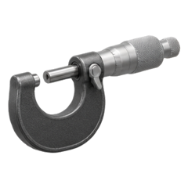

- Home
- Workforce Solutions
Workforce Solutions
A B2B workforce development partner for engineering and manufacturing organisations. We build competent, productive and job-ready employees through structured technical training, competency assessment and workforce development, closing the gap between qualifications and what the workplace actually needs.

Services
Choose what solves your problem
We will not push you into a larger package.

Engineering Fresher Readiness Programme
A structured programme that prepares engineering graduates for their first industry role.
View service
Corporate Technical Training
Customised training for employees in manufacturing, quality, design, documentation and workplace skills.
View service
Workforce Upskilling & Reskilling
Upgrade existing employees' competencies and prepare them for changing industrial requirements.
View service
In-Plant Training & Industrial Skill Development
Practical, workplace-oriented training conducted at your premises.
View service
Train-the-Trainer (TTT) Programme
Three days, 18 hours, 6 to 8 participants: develop internal trainers who teach consistently.
View service
Competency Assessment & Workforce Development Systems
Job-role competency mapping, skill matrices, gap analysis and development plans.
View serviceWho it is for
Built for
- Manufacturing companies
- Engineering and industrial SMEs
- Automobile and auto-component manufacturers
- Fabrication and machining companies
- Engineering colleges
- HR and Learning & Development departments
- Production, quality and maintenance departments
- Fresh engineering graduates seeking industry readiness
Workforce transformation
How it fits together
- Under-skilled workforce
- Competency assessment
- Customised training
- Practical evaluation
- Skilled workforce
- Improved performance
Flagship programme
Train-the-Trainer
Develop internal trainers who can deliver technical training consistently within your organisation.
- Learn
- Demonstrate
- Practise
- Teach
- Assess
Followed by a 30-day workplace review.
Workforce development cycle
Understand, assess, design, train, evaluate, improve
Understand
The company's workforce and business requirements.
Assess
Existing employee competencies.
Design
Customised training plans and modules.
Train
Technical and practical training.
Evaluate
Learning and skill improvement.
Improve
Follow-up and development actions.
FAQ
Frequently asked questions
What is the Engineering Fresher Readiness Programme?
A structured programme that prepares engineering graduates for their first industry role. It covers engineering and manufacturing fundamentals, drawings, quality, documentation and workplace skills, with an assessment at the start and at the end. The duration is adapted to the group and the employer.
Do you provide customised corporate training?
Yes. We first understand the roles, processes and skill gaps involved, then propose modules for those specific employees rather than a standard package.
Can training be conducted at our factory?
Yes. In-plant training is delivered at your premises, on your processes, following your site safety rules.
Do you provide workforce skill gap assessments?
Yes: job-role competency mapping, skill matrices, technical knowledge tests and practical skill assessments, with a report on the gaps found.
What is the Train-the-Trainer programme?
A three-day, 18-hour programme for 6 to 8 participants that turns experienced employees into internal trainers. It follows Learn, Demonstrate, Practise, Teach and Assess, with a 30-day workplace follow-up.
Can you develop training modules for our company?
Yes: curriculum, session plans, presentations, practical exercises and assessment papers built around your own processes and products.
How do you measure training effectiveness?
We compare baseline and final assessments on comparable tasks, assess practical skills, collect participant and supervisor feedback and, where agreed, check later whether the skills are being applied at work. Attendance alone is not treated as success.
Do you provide post-training reports?
Yes. Reports cover the training delivered, attendance, assessment results, competencies demonstrated, skills still needing development and recommended next steps.
Can you train existing employees in advanced manufacturing skills?
Yes, within our competence, for example CAD/CAM, GD&T, quality tools and lean fundamentals. For specialist subjects we bring in qualified trainers and tell you clearly who delivers what.
Get in touch
Talk to us about Workforce Solutions
Fees depend on scope, so we reply with a clear next step and a quotation where one is needed.
- Call+91 97252 04739
- WhatsApp+91 97252 04739